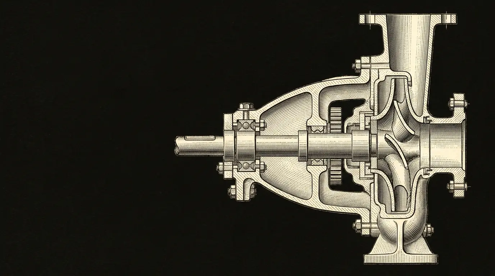

Fig. 01 · the missing organ
Sentys is a nervous system for industrial equipment. Four senses converge on a learned baseline; when one of them is surprised, it says which.

afferent pathways — all senses within healthy range